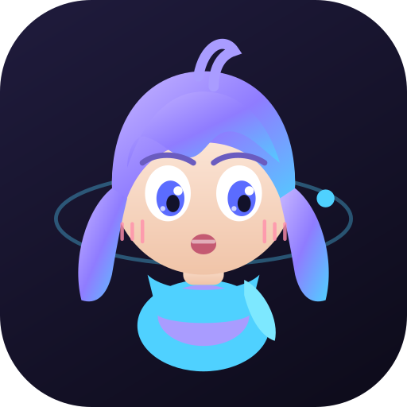
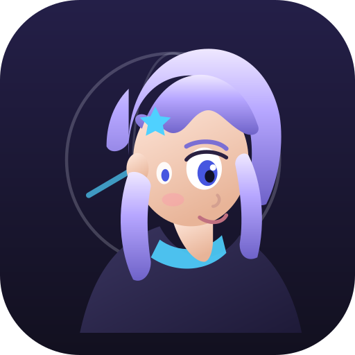
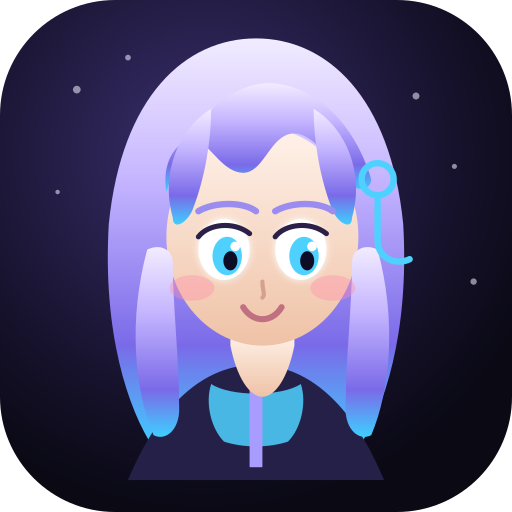

Kivi — SVG iterations
Pick a favorite; we’ll promote it to kivi.svg.
v1 · Soft bustFront-facing, soft smile, trail pin

v2 · Chibi guideBig eyes, twin tails, ahoge, scarf

v3 · Traveler profile3/4 view, coat, star clip

v4 · Neon nightLong hair, cyan eyes, hoodie
v5 · Clean app iconFramed bust, logo trail, hoodie